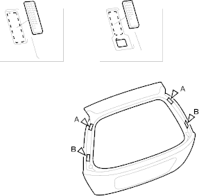
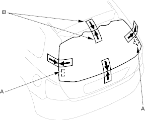
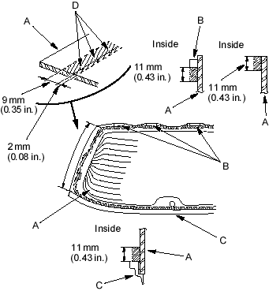

- Glue the side upper fasteners (A) and side lower fasteners (B) to the tailgate as shown.
Fastener Locations
A  : Fastener, 2 B : Fastener, 2
: Fastener, 2 B : Fastener, 2

- Set the rear window in the opening and centre it. Align the clips (A) of the rear window with the holes in the opening flange. Make alignment marks (B) across the rear window, tailgate and body with a grease pencil at the four points shown. Be careful not to touch the rear window where adhesive will be applied.

- Remove the rear window.
- With a sponge, apply a light coat of glass primer along the edge of the rear window (A), upper rubber dams (B) and lower rubber dam (C) as shown, then lightly wipe it off with gauze or cheesecloth:
- With the printed dots (D) on the rear window as a guide, apply the glass primer to both side portions of the rear window.
- Do not apply body primer to the rear window and do not get tailgate and glass primer sponges mixed up.
- Never touch the primed surfaces with your hands. If you do, the adhesive may not bond to the rear window properly, causing a leak after the rear window is installed.
- Keep water, dust and abrasive materials away from the primed surface.
Cross hatched area: Apply glass primer here.
